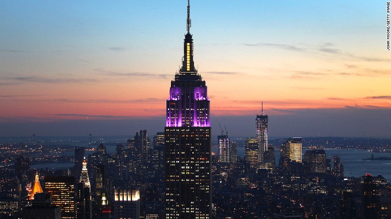
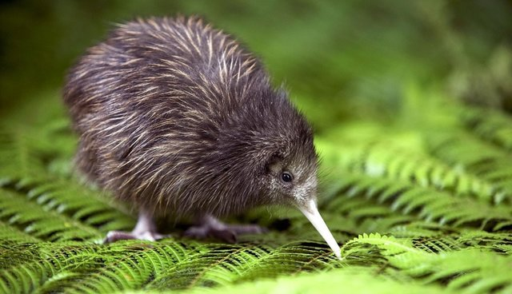
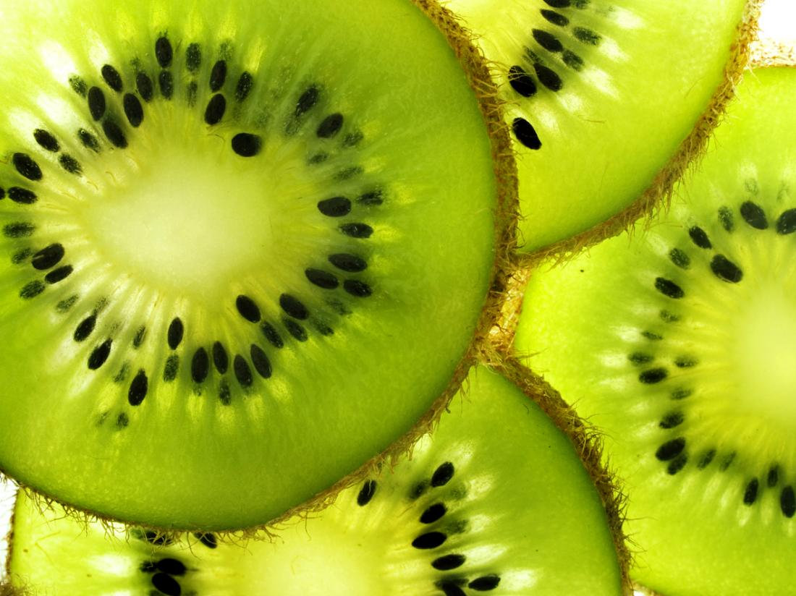

1. The city that never sleeps. Growing up in a quite superb, I dont know what living in a city is like. I dont have any specific places to go in mind, I would just like to be carried by the city. New York is a frantic city with always something to do around the corner. I would like to visit the empire state building.
2. The Bahamas is a coral-based archipelago in the Atlantic Ocean. Scuba diving and snorkeling is huge there. I've never snorkeled before so I would like to try it while im there. Bahamas is a really beautiful place that I've always wanted to visit.

3. Korea. Highest suicide rate in the world. Its the country of my origin ...so yeah. Ill visit.
4. New Zealand. Where I was born. Cleanest air you can find and great fishing. The national bird and fruit are both Kiwis.  